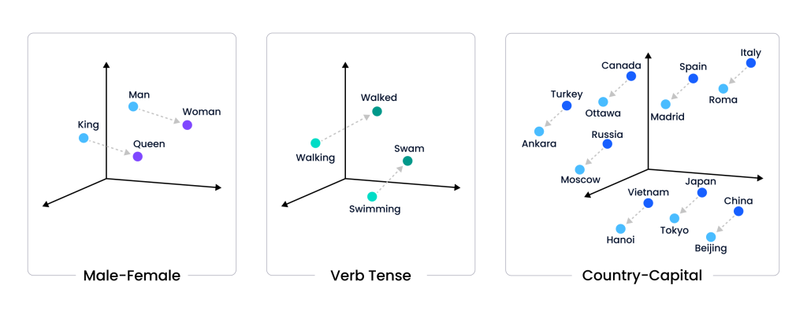
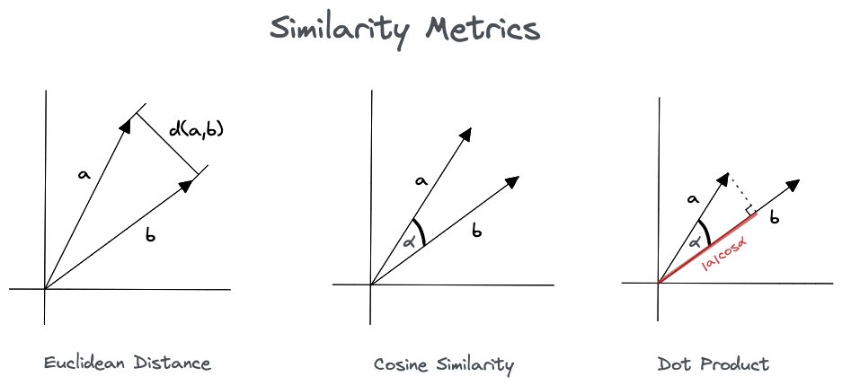
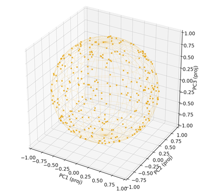

5. Capítulo: Embeddings satelitales: una nueva semántica del territorio#
5.1. Introducción conceptual#
En los últimos años, la inteligencia artificial ha permitido construir modelos de representación del mundo que trascienden los píxeles y los
valores espectrales. Los embeddings —representaciones numéricas densas de información compleja— constituyen una de las innovaciones
más profundas en la intersección entre aprendizaje profundo y Observación de la Tierra (EO).
En el dominio lingüístico, un embedding transforma palabras en vectores que capturan su significado contextual; del mismo modo, en el
dominio geoespacial, los embeddings satelitales traducen la
información espectral, temporal y contextual de cada píxel o región en
un vector semántico que codifica patrones de superficie, contextos
ambientales y relaciones espaciales. Luego, podemos decir que los Embeddings satelitales: nos permiten explorar el campo de una semántica geoespacial aprendida.
5.2. Introducción: del píxel al concepto#
Durante décadas, el análisis de imágenes satelitales se ha basado en valores radiométricos y en la interpretación de índices derivados (NDVI, NDWI, NDBI, etc.), que reflejan fenómenos biofísicos como la vegetación, el agua o lo urbano.
Sin embargo, la revolución del deep learning ha transformado la forma en que representamos la información. Hoy, la pregunta ya no es “¿qué valor tiene este píxel en la banda 4?”, sino “¿a qué se parece este píxel en términos de su significado latente?”.
Los embeddings satelitales representan ese salto conceptual: son una forma de codificar semánticamente el territorio.
Cada píxel o región es proyectado a un espacio vectorial de alta dimensión donde la distancia matemática refleja similitud contextual y
semántica, no solo espectral.
De este modo, el planeta deja de ser una grilla de reflectancias y se convierte en un espacio continuo de conceptos aprendidos.
5.3. *Fundamento teórico: ¿Qué es un embedding?#
¿Qué es un embedding?
En términos formales, un embedding es una función:
donde \(X\) representa un conjunto de observaciones complejas —imágenes multiespectrales, series temporales o escenas completas—,
y \(\mathbb{R}^n\) es un espacio vectorial latente.
La función \(f\) se aprende a partir de grandes volúmenes de datos mediante redes neuronales profundas.
Su objetivo no es clasificar directamente, sino aprender una representación comprimida y significativa de los datos.
En el dominio de la Observación de la Tierra (EO), esto significa que:
Cada píxel o parche satelital se codifica en un vector de, por ejemplo, 256 dimensiones.
Las relaciones espaciales y espectrales se preservan de modo que píxeles similares en contexto quedan cercanos en el espacio latente.
Los embeddings permiten medir similitud coseno entre lugares, como se mide similitud semántica entre palabras en modelos como Word2Vec o BERT.
En el dominio de la Observación de la Tierra (EO), esto significa que:
Cada píxel o parche satelital se codifica en un vector de, por ejemplo, 64 dimensiones
Las relaciones espaciales y espectrales se preservan de modo que píxeles similares en contexto quedan cercanos en el espacio latente.
Los embeddings permiten medir similitud coseno entre lugares, como se mide similitud semántica entre palabras en modelos como Word2Vec o BERT.
Esta idea, proveniente del procesamiento del lenguaje natural, encuentra en las imágenes satelitales una analogía poderosa:
así como los modelos lingüísticos aprenden que “rey” - “hombre” + “mujer” ≈ “reina”, los modelos de EO aprenden que “vegetación densa” - “verde” + “suelo desnudo” ≈ “zona urbana”.
{kind=link}

Fig. 5.1 concepto de embeddings en un espacio multidimensional#
Un campo de embedding es la matriz continua o “campo” de embeddings aprendidas. Las imágenes de las colecciones de campos de embedding representan trayectorias espacio-temporales que abarcan un año completo y tienen 64 bandas (una para cada dimensión de incrustación).

Fig. 5.2 vector de incrustación n-dimensional muestreado de un campo de incrustación embedding#
5.4. Relación entre \(\mathbb{R}^n\) y la hiperesfera unitaria \(S^{n-1}\)#
5.4.1. Definición#
La hiperesfera unitaria en \(\mathbb{R}^n\) se define como: \( S^{n-1} = \{\, \mathbf{x} \in \mathbb{R}^n \mid \lVert \mathbf{x} \rVert_2 = 1 \,\} \)
Es decir, el conjunto de todos los vectores de norma 1 en \(\mathbb{R}^n\).
\(\mathbb{R}^n\): espacio euclídeo \(n\)-dimensional completo (todas las magnitudes y direcciones).
\(S^{n-1}\): superficie (de dimensión \(n-1\)) de la esfera unitaria contenida en \(\mathbb{R}^n\).
5.4.2. Proyección radial (normalización L2)#
Todo vector no nulo \(\mathbf{x} \in \mathbb{R}^n - \{0\}\) puede proyectarse sobre \(S^{n-1}\) mediante la normalización L2:
\( \hat{\mathbf{x}} = \frac{\mathbf{x}}{\lVert \mathbf{x} \rVert_2} \)
Esta transformación conserva la dirección y elimina la magnitud, mapeando: \( \mathbb{R}^n - \{0\} \xrightarrow[\text{normalización L2}]{\text{proyección radial}} S^{n-1} \)
5.4.3. Interpretación geométrica#
\(\mathbb{R}^n\) contiene todas las direcciones y longitudes posibles.
\(S^{n-1}\) captura solo las direcciones unitarias (el “esqueleto angular” de \(\mathbb{R}^n\)).
5.4.4. Aplicación en embeddings#
En modelos fundacionales y análisis de embeddings:
Se normaliza a norma unitaria para comparar vectores por dirección (no por longitud).
La similitud coseno entre embeddings \(\mathbf{u},\mathbf{v}\) coincide con el producto interno de sus versiones unitarias:
5.4.5. Resumen#
\(\mathbb{R}^n\) describe el espacio de todas las representaciones posibles; \(S^{n-1}\) describe sus direcciones puras. La normalización L2 proyecta \(\mathbb{R}^n - \{0\}\) sobre \(S^{n-1}\), habilitando comparaciones angulares (similitud coseno) entre embeddings.
3. Modelos fundacionales y embeddings satelitales
Los modelos fundacionales para Observación de la Tierra (FM4EO) como Prithvi, TerraMind o el Satellite Embedding V1 de Google, fueron entrenados sobre millones de escenas multitemporales de Sentinel-2, Landsat y MODIS.
Estos modelos aprenden a generar vectores invariantes a cambios atmosféricos, de estación o de sensor, capturando así la esencia estadística del paisaje.
¿Qué es un embedding?
El dataset GOOGLE/SATELLITE_EMBEDDING/V1, disponible en Google Earth Engine, representa la primera implementación global del paradigma de embeddings satelitales: un mapa latente del planeta donde cada píxel, con resolución espacial de 10 metros, está asociado a un vector de 64 dimensiones que codifica su identidad semántica aprendida.
Cada una de esas 64 dimensiones sintetiza patrones espectrales, espaciales y contextuales extraídos mediante aprendizaje auto-supervisado**, lo que permite comparar regiones por su significado estadístico más que por su mera reflectancia espectral.
var embeddings = ee.ImageCollection('GOOGLE/SATELLITE_EMBEDDING/V1/ANNUAL');
var img = embeddings.first(); // o .mosaic() para el año filtrado
print('N° de bandas (dim del embedding):', img.bandNames().size());
5.5. Estructura matemática y significado de la similitud#
La similitud coseno se utiliza como métrica fundamental en este espacio latente.
Dado un vector de referencia \(\mathbf{s}\) (por ejemplo, el promedio de los embeddings de un conjunto de polígonos de agua) y un vector de píxel \(\mathbf{x}\), la similitud se define como:
Este valor se reescala al intervalo [0,1], donde 1 indica máxima similitud semántica.
Lo notable es que esta similitud no depende de índices espectrales fijos, sino de representaciones aprendidas que capturan patrones espaciales, texturales y de contexto ambiental.
5.6. Relación entre embeddings geoespaciales#
Esta tabla resume los tipos de relaciones posibles entre embeddings geoespaciales en función de su similitud coseno, junto con ejemplos concretos de fenómenos del territorio.
Tipo de relación |
Similitud coseno |
Significado geoespacial |
Ejemplos geoespaciales |
|---|---|---|---|
Sinónimos / similares |
≈ +1 |
Fenómenos del mismo tipo o clase; comparten estructura espectral o semántica. |
Bosque templado 🌳 ↔ Selva subtropical 🌿 • Cultivo de soja 🌾 ↔ Cultivo de maíz 🌽 • Asentamiento urbano compacto 🏙️ ↔ Núcleo urbano denso 🧱 |
Ortogonales |
≈ 0 |
Fenómenos sin relación semántica ni espectral directa; independientes en el espacio latente. |
Bosque templado 🌳 ↔ Ciudad 🏙️ • Lago andino 💧 ↔ Zona industrial 🏭 • Desierto 🏜️ ↔ Glaciar ❄️ |
Antónimos |
≈ –1 |
Fenómenos opuestos dentro de una misma dimensión latente (humedad, temperatura, cobertura, textura, etc.). |
Vegetación densa 🌲 ↔ Suelo desnudo 🪨 • Humedal 🌾 ↔ Desierto árido 🏜️ • Superficie fría de nieve ❄️ ↔ Asfalto cálido 🌡️ |
5.7. Interpretación general#
Similares (≈ +1): comparten “firma semántica latente”; pertenecen a la misma familia de coberturas o patrones espectrales.
Ortogonales (≈ 0): no comparten dimensiones semánticas; describen contextos o procesos totalmente distintos.
Antónimos (≈ –1): representan extremos opuestos en un mismo eje latente (por ejemplo, humedad ↔ sequedad, natural ↔ artificial).
En otras palabras, dos píxeles o regiones son “similares” no porque compartan el mismo valor de reflectancia o NDVI,
sino porque sus vectores latentes apuntan en direcciones próximas dentro de un espacio multidimensional de significado.
Este enfoque habilita la búsqueda semántica geoespacial, donde el criterio de comparación es el significado estadístico aprendido por el modelo, y no un índice calculado manualmente.
En consecuencia:
Los embeddings permiten buscar por concepto (“lugares similares a este humedal”) en lugar de por valor (“NDWI > 0.4”).
Cada comparación en este espacio vectorial actúa como un razonamiento semántico entre regiones.
5.8. Hiperesfera unitaria y operaciones de normalización en embeddings#
5.9. 🔵 Definición#
Una hiperesfera unitaria es la generalización de una esfera común a espacios de muchas dimensiones.
En términos matemáticos, se define como el conjunto de todos los vectores cuya norma (longitud) es igual a 1:
\(S^{n-1} = \{\, x \in \mathbb{R}^n \; | \; \|x\| = 1 \,\}\)
Por ejemplo:
Dimensión |
Nombre geométrico |
Ecuación |
Representación |
|---|---|---|---|
1D |
Dos puntos (–1, +1) |
\(x^2 = 1\) |
🔹🔹 |
2D |
Circunferencia unitaria |
\(x^2 + y^2 = 1\) |
⭕ |
3D |
Esfera unitaria |
\(x^2 + y^2 + z^2 = 1\) |
🟢 |
64D |
Hiperesfera unitaria |
\(x_1^2 + x_2^2 + ... + x_{64}^2 = 1\) |
(no visualizable, pero análoga) |
5.10. Interpretación en embeddings#
Los embeddings (como los de Satellite Embeddings V1, Prithvi o TerraMind) representan entidades —palabras, píxeles, regiones o escenas— como vectores en un espacio latente de alta dimensión.
Antes de compararlos, los modelos suelen normalizarlos a norma 1:
\(\hat{x} = \frac{x}{\|x\|}\)
De este modo, todos los vectores se proyectan sobre la superficie de la hiperesfera unitaria.
Así, su ángulo relativo (y no su magnitud) representa su similitud semántica.
\(\text{similitud coseno}(x, y) = \hat{x} \cdot \hat{y} = \cos(\theta)\)
5.10.1. Operaciones que normalizan vectores al espacio de la hiperesfera unitaria#
Categoría |
Operación o técnica |
Descripción |
Geometría subyacente |
|---|---|---|---|
Métrica |
Cosine similarity |
Mide el coseno del ángulo entre dos vectores. |
Comparación angular en la hiperesfera. |
Métrica |
Cosine distance (1 - cos) |
Evalúa disimilitud angular (más grande = más distintos). |
Todos los vectores tienen norma 1. |
Métrica |
Angular distance |
Calcula el ángulo directo \(\arccos(\hat{x}\cdot\hat{y})\). |
Distancia geodésica sobre la hiperesfera. |
Agrupamiento |
Spherical k-means |
Variante del k-means que usa similitud coseno en lugar de distancia euclídea. |
Clustering sobre la superficie de la hiperesfera. |
Aprendizaje contrastivo |
InfoNCE / SimCLR / CLIP |
Pérdidas contrastivas que comparan pares de embeddings normalizados. |
Proyección L2 → todos los vectores tienen norma 1. |
Aprendizaje contrastivo |
NT-Xent Loss |
Pérdida usada en self-supervised learning para maximizar similitud angular. |
Espacio latente esférico. |
Aprendizaje de métricas |
Triplet Loss (Anchor–Positive–Negative) |
Obliga a que los embeddings similares estén más próximos que los distintos. |
Distancias angulares en la hiperesfera. |
Aprendizaje de métricas |
ArcFace / CosFace / SphereFace |
Modelos que aprenden en el espacio angular (común en reconocimiento facial). |
Embeddings confinados a una hiperesfera unitaria. |
Modelos fundacionales EO |
Prithvi, TerraMind, Satellite Embeddings V1 |
Embeddings multiespectrales y temporales normalizados para similitud coseno. |
Espacio semántico latente sobre una hiperesfera de 64D. |
{kind=link}

Fig. 5.3 Operaciones: Distancia, Similitud Coseno y dot product. Fuente: [Fernández García, 2024]#
¿Te interesa conocer como graficar un embedding en la hiperesfera unitaria?
El Apéndice C explica cómo graficar un embedding en \(\mathbb{R}^{64}\)
y lo ejemplifica en el espacio tridimensional \(\mathbb{R}^3\).
5.10.2. Interpretación geométrica#
En la hiperesfera unitaria:
Todos los vectores tienen la misma longitud (1).
Solo importa su dirección, que define su posición sobre la superficie.
Dos vectores cercanos (pequeño ángulo) representan fenómenos similares.
Dos vectores ortogonales (90°) representan fenómenos distintos o no relacionados.
Así, la distancia angular se convierte en una medida directa de similitud semántica o geofísica.
5.10.3. En resumen#
La hiperesfera unitaria es el espacio geométrico donde viven los embeddings normalizados.
Allí, las operaciones basadas en ángulo o coseno comparan significado, no magnitud.
En modelos fundacionales de Observación de la Tierra, esta geometría es la base de la similitud coseno y de todo el aprendizaje contrastivo que permite mapear el planeta en el espacio latente.
{kind=link}

Fig. 5.4 Ejemplo 300 embedding normalizados en la hiperesfera unitaria#
5.11. Cambios de paradigmas#
“La teledetección basada en reflectancias se apoya en firmas espectrales por píxel, mientras que la geosemántica estadística se fundamenta en firmas semánticas latentes aprendidas por los modelos.”
Esa frase tiene potencia porque:
Marca un cambio de paradigma: Pasamos de medir energía reflejada (nivel físico-radiométrico) a medir significado (nivel semántico-latente).
Conecta dos mundos con una metáfora común: Ambas usan el concepto de firma, pero en espacios distintos:
Espectral → espacio de reflectancias.
Semántico → espacio de embeddings o representaciones latentes.
Es clara para cualquier lector técnico o científico:
Quien venga de la teledetección clásica entiende “firma espectral”;
quien venga del aprendizaje profundo entiende “embedding” o “espacio latente”.
Sintetiza la transición epistemológica:
De una visión físico-determinista a una representación estadístico-distribucional del territorio.
La teledetección tradicional se basa en firmas espectrales obtenidas a partir de reflectancias por píxel, mientras que la geosemántica estadística se apoya en firmas semánticas latentes, aprendidas por modelos que capturan patrones y significados distribuidos en el espacio.”
5.12. Más: Contexto y patrones espaciales en embeddings satelitales#
El embedding captura contexto más que forma fina, lo que lo hace especialmente útil para detectar patrones espaciales amplios y coherentes.
A continuación se detallan ejemplos de tipologías geográficas y sugerencias prácticas de uso.
Ejemplos de detección por similitud
🌊 Océano / grandes cuerpos de agua
Muy distintivos y homogéneos.
Tip: máscara JRC Water (occurrence ≥ 10–30%).
🏞️ Lagos / embalses medianos–grandes
Formas estables y contraste claro con tierra.
Tip: JRC Water + picos locales sobre el mapa de similitud.
🌆 Áreas urbanas densas (CBD, manzanas compactas)
Textura “gruesa”, patrones de calles y edificios.
Tip: NDBI alto, NDVI bajo para recortar candidatos.
🏭 Zonas industriales / portuarias grandes
Superficies duras, depósitos, muelles, contenedores.
Tip: NDBI↑, NDVI↓, Sentinel-1 VV/VH moderado–alto.
🌾 Mosaicos agrícolas extensos (parcelas, pivotes)
Geometría repetitiva; muy “aprendible”.
Tip: recortar a áreas rurales y usar época anual similar.
⛏️ Canteras / minas a cielo abierto
Texturas minerales, taludes, caminos internos.
Tip: NDBI↑, NDVI↓, SWIR↑, S1 VV/VH↑.
🌳 Bosques densos / masas forestales
Textura homogénea y patrón regional.
Tip: NDVI↑ para filtrar no-vegetación.
🧂 Salinas / salares
Reflectancia y textura características, grandes extensiones.
Tip: SWIR/NIR peculiar; conviene recortar con máscara de suelo desnudo.
🐦 Humedales extensos
Mezcla agua-vegetación con patrón espacial distintivo.
Tip: JRC (occurrence medio) + NDVI medio/alto.
🚗 Infraestructura lineal grande (autopistas, aeropuertos)
Linealidad clara a escala 10–20 m.
Tip: detectar por similitud + postprocesar con filtros morfológicos.
⚡ Parques eólicos / solares grandes
Patrón repetitivo (aerogeneradores, filas de paneles).
Tip: S1 ayuda (estructuras metálicas dispersas), NDBI↑, NDVI↓.
🏡 Barrios privados / countries característicos
Huella y traza interna repetida, lagunas artificiales.
Tip: recortar con urbano (NDBI↑) y usar varias muestras.
🏖️ Playas / dunas extensas
Textura y tonalidad de arena, bordes costeros.
Tip: excluir agua con JRC y vegetación con NDVI↓.
5.13. Consideraciones metodológicas y recomendaciones prácticas#
El dataset GOOGLE/SATELLITE_EMBEDDING/V1 constituye una representación semántica de la superficie terrestre aprendida a partir de millones de escenas multitemporales, pero su naturaleza latente y abstracta impone ciertas limitaciones operativas.
En primer lugar, es importante reconocer que estos embeddings no codifican objetos discretos ni detalles finos —como vehículos, edificaciones individuales o elementos de pequeña escala—, ya que su resolución espacial de 10 metros y su entrenamiento auto-supervisado están orientados a capturar patrones espaciales amplios, contextos ambientales y estructuras territoriales coherentes.
Por esta razón, su mayor potencial se manifiesta en la detección y comparación de tipologías geográficas o paisajísticas, tales como zonas agrícolas, humedales, cuerpos de agua, áreas urbanas densas, salinas o minas a cielo abierto.
Estas categorías presentan huellas espaciales y texturales persistentes que el modelo logra representar en su espacio vectorial de 64 dimensiones.
5.14. Integración con índices espectrales y capas complementarias#
Un aspecto metodológico crucial consiste en combinar los embeddings con indicadores derivados (espectrales o radar) que aportan atributos físicos o biofísicos interpretables.
La semántica latente del embedding debe complementarse con información radiométrica y temática explícita, de modo que el análisis se apoye tanto en patrones aprendidos como en métricas observables.
Entre las estrategias más efectivas se encuentran:
Uso de índices ópticos y radar: NDVI, NDBI, BSI, NDWI, así como coeficientes VV/VH de Sentinel-1. Estos índices permiten refinar la interpretación del embedding y aislar falsas similitudes.
Por ejemplo, la detección de zonas industriales o ladrilleras se beneficia de un umbral bajo de NDVI y alto de NDBI, mientras que el radar ayuda a discriminar superficies rugosas o metálicas.Máscaras temáticas auxiliares: capas como Dynamic World (clasificación semántica global multitemporal), Global Surface Water (JRC), ESA WorldCover o Copernicus Global Land Cover son fundamentales para acotar la búsqueda o descartar clases irrelevantes (por ejemplo, excluir el agua antes de analizar áreas urbanas).
Postprocesamiento con reglas espaciales: filtros morfológicos, análisis de conectividad y agregaciones por tamaño de polígono permiten eliminar “ruido” o zonas ambiguas.
En síntesis, los embeddings deben entenderse como un componente de una arquitectura analítica híbrida, donde el aprendizaje profundo se articula con el conocimiento geográfico, físico y contextual.
5.15. Usos avanzados de embeddings satelitales#
Los embeddings satelitales son una herramienta versátil que puede integrarse en múltiples flujos de trabajo de análisis geoespacial, tanto supervisados como no supervisados.
A continuación se resumen los principales enfoques de aplicación:
5.15.1. 🔹 1. Segmentación semántica#
Los vectores de embeddings pueden servir como atributos de entrada para algoritmos de segmentación (por ejemplo, k-means, Mean-Shift, Spectral Clustering o DBSCAN), permitiendo agrupar píxeles o regiones con similaridad semántica en lugar de simple proximidad espectral.
Esta estrategia es útil para generar mapas de regiones homogéneas sin necesidad de etiquetas previas, abriendo la posibilidad de descubrir patrones emergentes.
5.15.2. 🔹 2. Clasificación supervisada#
Los embeddings actúan como una capa intermedia de alto nivel sobre la cual puede entrenarse un clasificador tradicional (Random Forest, SVM, redes neuronales ligeras) utilizando muestras de entrenamiento definidas por el analista.
Esto reduce el ruido, mejora la generalización y permite transferir conocimiento entre regiones o épocas distintas.
Ejemplos prácticos son la detección de ladrilleras, cultivos específicos o áreas degradadas, donde la similitud latente se combina con información espectral y radar para obtener una discriminación más precisa.
5.15.3. 🔹 3. Búsqueda semántica y análisis de similitud#
Uno de los usos más innovadores es la búsqueda por similitud (“find places like this”), en la cual un vector de referencia —derivado de un polígono o muestra representativa— se compara con el embedding completo del territorio mediante la similitud coseno.
Este procedimiento permite detectar lugares análogos en su estructura semántica, facilitando la identificación de ambientes similares, expansión de cultivos o detección de anomalías espaciales.
5.15.4. 🔹 4. Entrenamiento no supervisado y exploración de patrones#
A partir del espacio latente generado por los embeddings, pueden aplicarse técnicas de reducción de dimensionalidad (PCA, t-SNE, UMAP) para visualizar y explorar relaciones entre regiones.
Estos análisis permiten descubrir clústeres naturales que revelan tipologías de paisaje, transiciones ecológicas o gradientes urbanos-rurales sin requerir etiquetas previas.
5.15.5. Síntesis epistemológica#
En definitiva, los embeddings satelitales constituyen un nuevo lenguaje estadístico del territorio, en el que cada vector representa una unidad mínima de conocimiento geoespacial.
El modelo no “ve” colores o bandas, sino que razona en términos de patrones latentes aprendidos a partir de la co-ocurrencia espacial, temporal y contextual de los datos.
Sin embargo, la potencia de esta representación no radica en sustituir los índices o modelos clásicos, sino en integrarse con ellos.
La sinergia entre semántica latente (embeddings) y semántica explícita (índices, capas temáticas, reglas físicas) define el camino hacia una GeoIA robusta, explicativa y transferible para la gestión del territorio, la observación ambiental y la toma de decisiones basadas en evidencia.